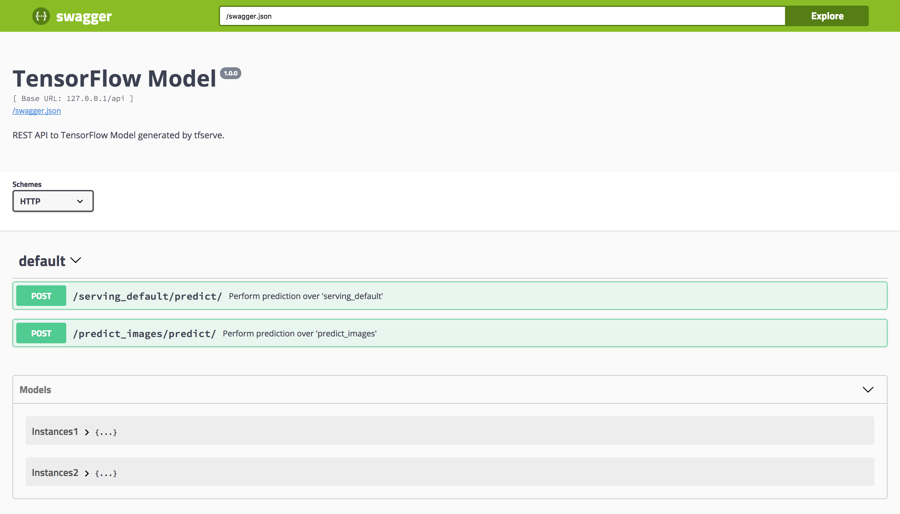

tfserve provides a GoogleML compatiable REST API for predictions, which can be used to serve TensorFlow Models from R with ease.

For example, we can train MNIST as described by MNIST For ML Beginners and then save using SavedModelBuilder and the right signature or, for conviniece, use a tfserve helper function as follows:
library(tfserve)
library(magrittr)
model_path <- "trained/tensorflow-mnist/1"
mnist_train_save(model_path)## [1] "trained/tensorflow-mnist/1/saved_model.pb"Then, we can serve this model with ease by running:
serve_savedmodel(model_path)We can make use of the pixels HTMLWidget to manually collect a vector of pixels and pass them to the REST API from tfserve as follows:
library(pixels)
recognize_digit <- function() {
pixels <- get_pixels()
httr::POST(
url = "http://127.0.0.1:8089/api/predict_images/predict/",
body = list(
instances = list(
input = list(
matrix(as.double(pixels), 28, 28, byrow = T) %>% as.vector()
)
)
),
encode = "json"
) %>%
httr::content(as = "text") %>%
jsonlite::fromJSON() %>%
as.vector() %>%
round(digits = 1) %>%
as.logical() %>%
which() - 1
}
recognize_digit()